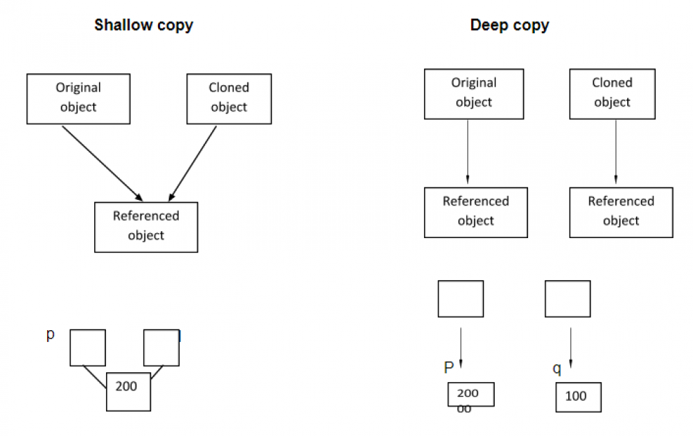

Graph
Concept
How to avoid CYCLE while we are traversing the graph? Create a container to store visited elements.
Deep Copy
A new oject is created without referencing the old one.
The copying process executes recursively.
Using "new" to deep copy every element.
(The above image is from http://en.wikipedia.org.)
Represent a graph
Adjacent List
save more space than adj matrix
Adjacent Matrix
Approach1: DFS
Time Complexity: O(N), where N is the number of nodes in the given graph.
Space Complexity: O(N), where N is the size of visited map. The stack would need O(H), where H is the maximum height of the graph. However, H <= N, overall, space complexity is O(N).
Approach2: BFS + queue
Time Complexity: O(N), where N is the number of nodes in the given graph.
Space Complexity: O(N), where N is the size of visited map. The queue would need O(W), where W is the maximum width of the graph. However, W <= N, overall, space complexity is O(N).